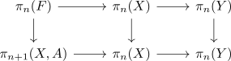

relative homotopy group and homotopy group of the homotopy fibre
Proposition
let $(X,A)$ be a pointed pair of spaces Then
\begin{align*}
\pi_n(X,A,*) \cong \pi_{n-1}(F,*)
\end{align*}
where
\begin{align*}
F \coloneqq \mathrm{hofib}_{a}(A \hookrightarrow X)
\end{align*}
is the homotopy fibre
Proof
consider the
- long exact sequence of homotopy groups of topological spaces
- long exact sequence of relative homotopy

Then by the Five-Lemma it suffices to show that there exists a map
\begin{align*}
\pi_n(F) \rightarrow \pi_{n+1}(X,A)
\end{align*}
compatible with the diagram.
Define
\begin{align*}
\pi_n(F) \rightarrow& \pi_{n+1}(X,A) \\
(S^{n-1} \rightarrow A) \mapsto& (D^n,S^{n-1}) \rightarrow (X,A)
\end{align*}
where $S^{n-1} \rightarrow A$ is the map and $D^{n-1} \rightarrow X$ is the nullhomotopy of the homotopy fibre.
todo: